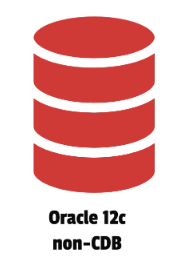
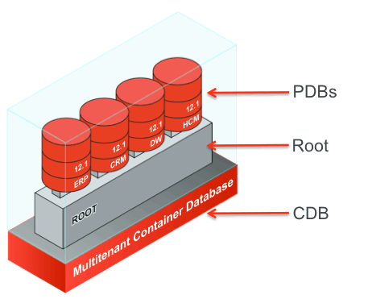
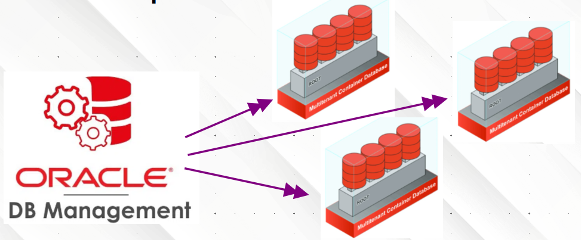

Definicions
Què és un DBA
La figura del DBA fa referència a la persona o a l’equip de persones responsables d’assegurar la disponibilitat de les dades d’una organització i l’accés a les mateixes de manera òptima. Serà el responsable de tot el cicle de vida del sistema d’informació.
Tasques d’un DBA
- Configurar el maquinari on s’instal·larà el SGBD
- Configurar el sistema operatiu
- Instal·lar i mantindre el SGBD
- Crear i configurar bases de dades
- Control d’usuaris i permisos
- Gestió de la seguretat
- Monitorar i optimitzar el rendiment de les bases de dades
- Realitzar tasques de còpies de seguretat i recuperació
Què és un SGBD
Un SGBD és un conjunt de programes que permeten l’emmagatzematge, modificació i extracció de la informació d’una base de dades, a més de proporcionar ferramentes per a explotar, administrar i gestionar les bases de dades.
En anglés DBMS o RDBMS (Data Base Management System).
Ranking DBMS: https://db-engines.com/en/ranking
Contesta a les preguntes ...
- Quants SGBD hi ha al rànquing
- Dels 5 primers, quants són de codi obert
- Els dos primers, a quina empresa pertanyen
- Dels 7 primers, quins sistemes operatius suporten
- El 8 i el 9, quins sistemes operatius suporten
Classificacions dels SGBD
Les classificacions dels Sistemes de Gestió de Bases de Dades (SGBD) poden organitzar-se en diverses categories segons la seua arquitectura, nombre d’usuaris, model de dades i el seu propòsit o tipus de càrrega de treball.
1. Segons el nombre d’usuaris
- Monousuari
- Dissenyats per a ser utilitzats per un únic usuari alhora.
- Exemple: Microsoft Access (en entorns personals o d’escriptori).
- Multiusuari
- Permeten que múltiples usuaris accedisquen i treballen simultàniament amb la base de dades.
- Controlen l’accés concurrent i la integritat de les dades.
- Exemples: MySQL, PostgreSQL, Oracle Database, SQL Server.
2. Segons la seua arquitectura
- Centralitzats
- Tota la base de dades s’emmagatzema i gestiona en un únic servidor.
- Els usuaris accedeixen al SGBD a través d’una xarxa, però tot el processament ocorre al servidor central.
- Més fàcils de mantindre, però poden ser un coll de botella i un punt únic de fallada.
- Distribuïts
- La base de dades està repartida en múltiples nodes (servidors).
- Les dades poden estar replicades o fragmentades entre diferents ubicacions.
- Més complexos, però ofereixen major disponibilitat i escalabilitat.
3. Segons el model de dades (o tipus de base de dades)
Aquests SGBD es classifiquen segons la forma en què estructuren i accedeixen a les dades:
- Relacionals
- Basats en taules amb files i columnes.
- Estructura fixa (esquema definit).
- Usen SQL.
- Exemples: MySQL, PostgreSQL, Oracle.
- Documentals
- Emmagatzemen dades en forma de documents (normalment JSON, BSON, etc.).
- Flexibles, ideals per a dades semi-estructurades.
- Exemples: MongoDB, CouchDB. Són part de NoSQL.
- De grafs
- Optimitzats per a representar relacions complexes entre dades.
- Les dades s’emmagatzemen com a nodes i arestes.
- Exemples: Neo4j, ArangoDB. També considerats NoSQL.
- In-memory
- Emmagatzemen les dades directament en la memòria RAM per a màxima velocitat.
- Usats en temps real, memòries cau o aplicacions crítiques.
- Exemples: Redis, SAP HANA.
- De sèries temporals
- Especialitzats en gestionar dades amb marques temporals (mètriques, logs, sensors).
- Optimitzats per a inserir, consultar i analitzar dades cronològiques.
- Exemples: InfluxDB, TimescaleDB.
- Espacials
- Dissenyats per a emmagatzemar i consultar dades geogràfiques i geomètriques.
- Suporten operacions com intersecció de polígons, distàncies, coordenades.
- Exemples: PostGIS (extensió de PostgreSQL), Oracle Spatial, MongoDB (suport geoespacial).
- Altres models clàssics
- Navegacionals: Organitzats en arbres o xarxes jeràrquiques.
- Orientats a objectes: Emmagatzemen objectes complets.
Notes importants:
- Alguns SGBD combinen múltiples models (per exemple, ArangoDB combina grafs, documents i claus-valor).
- Molts motors relacionals moderns ofereixen extensions per a models no relacionals, com PostgreSQL amb PostGIS (espacial) o TimescaleDB (sèries temporals).
4. Segons el propòsit o tipus de càrrega de treball
- OLTP (Online Transaction Processing) – Transaccionals
- Dissenyats per a gestionar moltes transaccions ràpides i concurrents.
- Usats en sistemes operacionals: vendes, bancs, reserves, etc.
- Requereixen alta integritat, concurrència i recuperació davant fallades.
- Exemples: MySQL, PostgreSQL, Oracle, SQL Server.
- OLAP (Online Analytical Processing) – Analítics / Data Warehouse
- Optimitzats per a consultes complexes i anàlisi de grans volums de dades.
- Suporten operacions com agregació, slicing, dicing, drill-down.
- Usats en intel·ligència de negoci, informes, dashboards.
- Exemples: Amazon Redshift, Snowflake, Google BigQuery, Microsoft Synapse, Teradata.
Alguns SGBD moderns (com PostgreSQL o SQL Server) poden realitzar funcions OLTP i OLAP híbrides, encara que no tan especialitzades com les eines pures.
Tipus de connexió a una Base de Dades
1. Des de consola (CLI - Command Line Interface)
- In situ
- Connexió local, des del mateix equip on està la base de dades.
- Exemples:
sqlplus usuari/pass@host/nombasedadesmysql -u usuari -p
psql -U usuari -d basedades
- Per SSH (Secure Shell)
- Connexió remota i segura a través d’un túnel SSH al servidor on està la BD.
- Útil per a mantindre la seguretat en entorns productius.
- Exemples:
ssh usuari@servidor
mysql -u usuari -p
2. Des d’un entorn gràfic (GUI - Graphical User Interface)
Ferramentes visuals que permeten gestionar bases de dades de manera amigable:
- Interfície intuïtiva, ideal per a usuaris no tècnics o per a tasques ràpides.
- Exemples:
- SQL Developer
- DBeaver
- phpMyAdmin
- pgAdmin
3. Des d’un llenguatge de programació (via driver o API)
Connexió programada des d’una aplicació o script.
- PDO (PHP Data Objects)
- Abstracció d’accés a base de dades en PHP.
- Suporta múltiples motors (MySQL, SQLite, PostgreSQL, etc.).
- Exemple:
$pdo = new PDO("mysql:host=localhost;dbname=mi_bd", "usuari", "contrasenya");
- Altres drivers per llenguatge
- JDBC (Java)
- ODBC (multiplataforma)
- psycopg2 (Python per a PostgreSQL)
- SQLAlchemy (ORM per a Python)
- etc...
Funcions d’un SGBD
- DDL (Data Definition Language):
CREATE,ALTER,DROP,TRUNCATE,COMMENT,RENAME - DML (Data Manipulation Language):
INSERT,DELETE,UPDATE,SELECT
↳ DQL (Data Query Language):SELECT - DCL (Data Control Language):
GRANT,REVOKE - TCL (Transaction Control Language):
COMMIT,ROLLBACK,SAVEPOINT - Integritat referencial: Garantir la coherència entre taules relacionades (claus foranes, dependències, etc.).
- Auditoria: Registrar qui accedeix o modifica dades, i quan ho fa.
- Temps de resposta idoni: Proporcionar respostes ràpides i eficients a consultes i operacions.
- Independència física i lògica: Separar la manera com es veuen les dades de com estan emmagatzemades internament.
- Monitoratge del SGBD: Supervisar el rendiment, ús de recursos, sessions, etc.
- Connectivitat: Permetre accés des de diferents aplicacions, sistemes operatius i ubicacions.
- Còpia i recuperació: Fer còpies de seguretat i restaurar-les en cas de fallada o pèrdua de dades.
Elements d’un SGBD
Un Sistema Gestor de Bases de Dades (SGBD) està compost per diversos elements o components que treballen conjuntament per facilitar l’emmagatzematge, recuperació, manipulació i administració de dades.
1. Processador de consultes
És el component encarregat d’interpretar i executar les consultes realitzades pels usuaris (normalment en SQL). Les seues funcions inclouen:
- Anàlisi lèxica i sintàctica de les consultes.
- Optimització de consultes per millorar-ne el rendiment.
- Generació del pla d’execució.
2. Gestor de la base de dades
És el nucli del SGBD. Controla l’accés a les dades i garanteix la seua integritat, seguretat i concurrència. Les seues responsabilitats són:
- Control de transaccions.
- Gestió de la concurrència (accés simultani).
- Recuperació davant de fallades.
- Control d’integritat.
3. Gestor d’arxius
Aquest component administra l’emmagatzematge físic de les dades en disc. Entre les seues funcions estan:
- Lectura i escriptura de blocs de dades.
- Organització i emmagatzematge eficient.
- Manteniment d’índexs i estructures d’emmagatzematge.
4. Interfícies externes
Són els mecanismes que permeten als usuaris i aplicacions comunicar-se amb el SGBD. Poden incloure:
- Interfícies gràfiques (GUI).
- Interfícies de programació (API).
- Consoles de comandes.
- Connectors per a llenguatges de programació.
5. Preprocessador del llenguatge de manipulació de dades (DML)
Aquest component s’encarrega d’identificar les sentències DML (com SELECT, INSERT, UPDATE, DELETE) dins del codi font d’una aplicació. Funcions clau:
- Integrar sentències DML en llenguatges com C, Java, etc.
- Traduir-les a crides al processador de consultes del SGBD.
6. Compilador del llenguatge de definició de dades (DDL)
Traduïx les sentències DDL (com CREATE, ALTER, DROP) que definixen l’estructura de la base de dades. La seua funció és:
- Processar les definicions d’esquemes, taules, índexs, vistes, etc.
- Actualitzar el diccionari de dades amb aquesta informació.
7. Gestor del diccionari
El diccionari (o catàleg) de dades és una base de dades interna que emmagatzema metadades. Aquest gestor:
- Administra el diccionari de dades.
- Proporciona informació sobre les estructures, restriccions, usuaris i permisos.
- És consultat per quasi tots els altres components del SGBD.
Com seleccionar un SGBD
Una vegada es coneixen els elements d’un SGBD, els tipus de SGBD i els conceptes clau, ja s’està en posició de poder triar un SGBD tenint en compte els factors que determinaran l’elecció.
Factors per a l’elecció del SGBD
- Tipus de dades a tractar
- Volum de dades
- Nombre d’usuaris i necessitat de concurrència
- Tipus de consultes
- Cost (compra i manteniment), llicències
- Velocitat de lectura/escriptura
- Arquitectura i connectivitat (escalabilitat)
- Recursos i política de l’empresa
- Seguretat (compliment normatiu – compliance)
- Requisits del sistema
- Integració amb altres aplicacions
- APIs
- Migració de dades
- Tipologia de la base de dades (relacional, NoSQL, etc.)
- Experiència de l’equip (comunitat, documentació disponible)
- Suport tècnic
- Actualitzacions del producte
Documentació
En cada instal·lació s’haurà d’elaborar o omplir una documentació amb la informació següent. Aquesta documentació no serà pública i es guardarà per a consultes tècniques.
- Nom i contacte de la persona instal·ladora
- Data de la instal·lació
- Màquina, IP, DNS, port(s)
- Característiques de la màquina
- Com accedir a la màquina (física, virtual, núvol)
- Sistema Operatiu / versió
- Usuari administrador del sistema operatiu
- Usuari que realitza la instal·lació
- Producte i versió utilitzada del SGBD
- Llocs/carpetes on s’instal·la el producte
- Llocs/carpetes on s’instal·la la base de dades
- Llocs/carpetes on estan els fitxers rellevants
- Noms de les bases de dades (CDB, PDBs, ...)
- ... i qualsevol altra informació que es considere rellevant
Verificar els requisits d’instal·lació
En cada SGBD hi haurà uns requisits que podem trobar en la documentació de cada versió del producte concret ... ORACLE, PostgreSQL, MySQL, etc.
Abans de començar la instal·lació, cal aconseguir i tindre disponibles aquests documents!
Verificar:
- Requisits de hardware
- Kernel del sistema operatiu adequat
- Comunicacions
- Espai lliure (memòria i emmagatzematge)
- Existència de paquets i versions
- Variables d’entorn
- Usuaris
Registre de la instal·lació (log de la instal·lació)
Tots els instal·ladors de sistemes gestors de bases de dades guarden un registre de les operacions realitzades durant la instal·lació. Aquest registre és útil en cas que es produeixi algun problema, per a diagnosticar-ne el motiu.
L’estructura i ubicació del registre de la instal·lació dependrà del SGBD.
Edicions d'Oracle Database
🧾 Què és una edició?
Una edició d’Oracle Database fa referència a un conjunt de característiques i capacitats disponibles segons el perfil de l’usuari (empresa, educació, desenvolupador...). Cada edició té un cost, unes limitacions i uns usos recomanats.
Edicions disponibles
- Enterprise Edition (EE) – Completa i orientada a empreses grans. Inclou totes les funcionalitats.
- Standard Edition (SE) – Per petites i mitjanes empreses. Algunes funcionalitats limitades.
- Standard Edition One (SE1) – Versió anterior simplificada de SE (ja descontinuada).
- Standard Edition 2 (SE2) – Substituta de SE1. Limitada a 2 sockets i 16 fils de CPU.
- Express Edition (XE) – ✅ Gratuïta! Limitada en recursos (1 CPU, 2GB RAM, 12GB espai).
- Personal Edition (PE) – Orientada a desenvolupadors, només disponible en Windows.
- Lite Edition (LE) – Edició lleugera per a dispositius mòbils (molt poc utilitzada).
- Oracle Database 23ai Free – ✅ Versió moderna gratuïta per a educació i proves, successora de XE.
☁️ Edicions Cloud
Oracle ofereix també les edicions anteriors com a serveis al núvol (Oracle Cloud Infrastructure) amb diversos nivells de rendiment i preu:
- Cloud Service SE
- Cloud Service EE
- Cloud Service EE – High Performance
- Cloud Service EE – Extreme Performance
- Exadata Cloud Service
⚙️ Tipus d’instal·lació (ús)
A més de l’edició, Oracle es pot desplegar amb diferents arquitectures d’instal·lació:
- Standalone – Instal·lació simple en un sol host (més comuna)
- Grid Infrastructure – Per suport a Oracle ASM i RAC
- Oracle RAC (Real Application Cluster) – Per entorns de clúster amb alta disponibilitat
- Oracle Autonomous Database – BD al núvol d'Oracle que utilitza intel·ligència artificial i aprenentatge automàtic per autogestionar-se
Recomanacions pràctiques
- Per entorns de formació i desenvolupament: Express Edition (XE) o Oracle Free 23ai
- Per empreses mitjanes: Standard Edition 2 (SE2)
- Per empreses grans amb requisits avançats: Enterprise Edition (EE)
- Per escalar i automatitzar: considera OCI Cloud Services amb RAC o Exadata
🔗 Recursos
(Practica 🧪) Primer contacte amb Oracle Database
Versions d’Oracle Database
🧾 Què és una versió?
La versió d’Oracle fa referència a la numeració del programari que indica les funcionalitats disponibles, el motor de base de dades i el model d’arquitectura utilitzat.
Exemples: 11g, 12c, 18c, 19c, 21c, 23ai
📋 Llista de versions populars
- Oracle 11g – Última versió no multitenant (encara usada en entorns legacy)
- Oracle 12c – Introducció de l’arquitectura multitenant (CDB + PDB)
- Oracle 18c – Versió basada en la núvol (Oracle Autonomous)
- Oracle 19c – Versió LTS (Long Term Support), molt estable i actual
- Oracle 21c – Exclusivament multitenant (no es permet el model tradicional)
- Oracle 23ai – Orientada a AI i machine learning, versió més moderna i gratuïta disponible com a “Oracle Free”
📦 Tipus d’ús (instal·lació)
A més de la versió i edició, Oracle es pot instal·lar amb diferents modalitats de funcionament:
- Standalone – Instal·lació típica en una sola màquina
- Grid Infrastructure – Per suport a RAC (Real Application Cluster)
- RAC – Clúster de múltiples nodes per alta disponibilitat i escalabilitat
⚠️ Consideracions importants
- A partir d’Oracle 21c, només es permet el model multitenant (CDB/PDB)
- És important triar la versió segons:
- Compatibilitat amb l’arquitectura del sistema
- Suport a llarg termini (LTS)
- Requisits de seguretat, escalabilitat i disponibilitat
- També es molt important tindre en consideració el fi de suport d'una versió (EOL, End of Life)
El Fi de vida útil, més conegut pel seu terme anglès End Of Life (EOL), és un terme que fa referència a la caducitat d'un producte de programari. És a dir, és el moment en què un programari deixa de tenir manteniment i suport.
Resum
- La versió defineix la tecnologia i característiques disponibles
- A partir de 12c es recomana treballar amb CDB i PDB
- 19c és la versió estable més utilitzada en producció (fins avui)
- 23ai és una nova versió gratuïta orientada a innovació
Requisits d’instal·lació
Requisits teòrics
Aquests són els requisits oficials mínims especificats per Oracle per instal·lar la base de dades:
En Windows:
- Mínim 1GB de memòria RAM
- 1GB d'espai en la carpeta temporal
- 8GB per a l’SGBD
- Espai addicional per a les BBDD
- Resolució gràfica 1024x768 amb 256 colors
- Connexió a Internet
En Linux:
- Kernel compatible
- Swap igual a la mida de la RAM
- Requisits similars a Windows quant a espai i connexió
Fonts oficials:
Requisits realistes
Per a una instal·lació funcional i estable, és recomanable:
- Almenys 2GB de RAM
- 2 processadors (CPU)
- 50GB disponibles per al sistema operatiu, Oracle i una BBDD
- Swap = 2 × RAM (en Linux)
- Resolució mínima: 1024x768 amb 256 colors
- Executar sempre com a administrador des de CMD
Eines i components importants
Durant la instal·lació s’inclouen diversos components:
setup– Instal·lador principal del softwaredbca– Assistència per crear la BBDD (CDB/PDB)netca– Configuració del listener de xarxanetmgr– Gestor de connexionsRMAN– Eina per a còpies de seguretat- Clients d'accés:
- SQL*Plus
- SQL Developer
- SQLcl
- DBeaver
- Enterprise Manager (deprecated)
Resum final
- Els requisits oficials són suficients per provar, però no recomanables per producció
- És essencial tenir els components bàsics preparats abans de la instal·lació
- ⚠️ La manca de swap o permisos d’admin pot impedir una instal·lació exitosa
Instància
Què és una instància Oracle?
Una instància d’Oracle és el conjunt de processos en segon pla (background processes) i estructures de memòria que gestionen l'accés a una base de dades Oracle.
- Cada vegada que s’inicia una instància, es crea automàticament una àrea de memòria global anomenada SGA (System Global Area)
- També es llancen diversos processos en background que gestionen l’entrada/sortida, la recuperació, el buffer cache, etc.
- Quan un usuari es connecta, se li assigna una àrea de memòria personal: la PGA (Program Global Area)
Components de memòria
- SGA – Àrea de memòria compartida entre tots els usuaris connectats a la instància
- PGA – Àrea de memòria privada per cada sessió/usuari
Es poden consultar amb les següents ordres des de SQL*Plus:
SQL> show sga;
SQL> show parameter sga;
SQL> show parameter pga;
Relació amb la base de dades (BBDD)
Una instància sempre està associada a una base de dades (BBDD) concreta. Quan s’inicia la instància, es carrega la informació necessària per gestionar aquesta BBDD.
- Una instància ⇄ una base de dades muntada (normalment una CDB)
- ⚠️ Si no s’inicia l’instància, no es pot accedir a la base de dades
Diagrama conceptual
[ Usuari ] → [ PGA ]
|
↓
[ Instància Oracle ]
├── SGA
├── Processos background (DBWn, LGWR, CKPT, etc.)
↓
[ Fitxers de la base de dades (BBDD) ]
Notes tècniques
- Una mateixa màquina pot tindre diverses instàncies
- És possible connectar-se a una instància sense obrir la base de dades (per manteniment)
- La instància i la base de dades estan lligades però són components separats
Conclusió: Sense instància, la base de dades no pot operar. I sense base de dades, la instància no té sentit.
Arquitectura d’Oracle
Arquitectura tradicional (non-CDB)
Abans de la versió 12c, Oracle utilitzava una arquitectura tradicional on una instància del SGBD controlava una única base de dades (una sola estructura de fitxers).
- Cada instància ↔ una única BBDD
- Sense contenidors ni BBDD “pluggable”
- Més senzill però menys flexible
Arquitectura multitenant (CDB/PDB)
A partir d’Oracle 12c, es va introduir l’arquitectura multitenant:
- CDB (Container Database): base de dades contenedora
- PDB (Pluggable Database): bases de dades encapsulades dins d’una CDB
Exemple d’una estructura multitenant:
CDB$ROOT → Contenidor principal
PDB$SEED → Plantilla de clonació de PDBs
PDB1, PDB2... → Pluggable Databases (útils per treballar)
Arquitectura multitenant (en un SGBD)
- Un SGBD d’ORACLE pot gestionar diversos contenidors (CDBs)
- Cada contenidor es una BBDD / Instància diferent
- Cada contenidor pot tindre dins diferents PDBs
Notes importants sobre multitenant
- Es poden tindre diverses PDBs funcionant en paral·lel dins d’una mateixa CDB
- Permet millorar l’escalabilitat, la seguretat i el manteniment
- ⚠️ A partir de la versió Oracle 21c, només es permet l’arquitectura multitenant
Diferències entre arquitectures
| Característica | Traditional (non-CDB) | Multitenant (CDB/PDB) |
|---|---|---|
| Instància ↔ BBDD | 1 ↔ 1 | 1 ↔ múltiples PDBs |
| Separació lògica | No | Sí (cada PDB és independent) |
| Compatibilitat amb 21c | ❌ | ✅ Obligatòria |
Beneficis de l’arquitectura multitenant
- Millor gestió de recursos
- Més fàcil de clonar, fer backups i upgrades
- Reducció del cost de manteniment
- Ideal per a entorns cloud i consolidació
Resum
- L’arquitectura multitenant és l’estàndard actual
- Cada PDB és com una base de dades separada, però comparteixen instància amb la CDB
- L’arquitectura tradicional ja no és vàlida per a noves versions
OFA – Oracle Flexible Architecture
Què és l’OFA?
L’OFA (Oracle Flexible Architecture) és un estàndard de disseny de l'estructura de directoris i nomenclatura de fitxers en instal·lacions Oracle. Està pensat per a:
- Organitzar eficientment grans volums de dades i software
- Facilitar l’administració i manteniment
- Millorar el rendiment
- Permetre gestionar múltiples bases de dades en un mateix sistema
📁 Exemples de rutes segons el sistema operatiu
🖥️ En Windows:
C:\app\oracle\product\21.0.0\dbhome_1
🐧 En Unix/Linux:
/u01/app/oracle/product/21.0.0/dbhome_1
On:
/u01és el punt de muntatge principaloracleés el nom de l’usuari que instal·laproductconté diferents versions del software21.0.0és la versió instal·lada
👤 L’usuari instal·lador
El directori oracle fa referència normalment a l’usuari del sistema operatiu que executa la instal·lació. Aquest usuari ha de tindre permisos d’administrador en Windows o pertànyer al grup oinstall i dba en Linux.
⚠️ Recomanacions
- No instal·lar Oracle directament a
C:\o/. Usa rutes separades com/u01per mantenir-ho organitzat. - Usa el mateix esquema per a totes les versions i entorns (dev, test, prod).
- No modificar l’estructura creada automàticament per Oracle.
🔗 Recursos addicionals
Pots consultar més informació sobre OFA als següents enllaços:
Instal·lació Oracle
Procés general d’instal·lació
Instal·lar un SGBD Oracle i crear una BBDD (CDB + PDB) són processos diferents, encara que el mateix assistent pot fer-ho tot alhora.
Des de Windows
- Es fa servir un executable (setup.exe) que guia la instal·lació del software.
- Abans d’executar
setup.exe, cal crear usuaris al sistema operatiu: - Exemple:
admin: usuari principal (amb permisos d'administrador)oracle: usuari per executar la instal·lació (també amb permisos d'administrador)usuari1: usuari sense permisos
- És important executar el setup amb l’usuari oracle des de CMD amb permisos d'administrador.
(no cal que l'usuari instal·lador s'anomene oracle, pot ser altre nom)
Opcions de setup
Durant l’execució de setup.exe es poden escollir diferents opcions:
- Instal·lació només del software: és l'opció recomanada. Es fa servir després
dbcaper crear la base de dades. - Instal·lació del software amb creació de CDB + PDB : no és l’opció que utilitzarem.
⚠️ No executar setup.exe més d’una vegada!
Creació de la base de dades (CDB + PDB)
- Es fa amb l’eina
dbca(Database Configuration Assistant). - Executar des de CMD amb permisos d’administrador:
C:\Windows\system32> dbca
- L’usuari que fa la instal·lació passa a ser l’usuari instal·lador del SGBD.
- Al final del procés, es mostra la ruta del fitxer de log de la instal·lació.
Creació de més PDB
També es fa amb dbca:
- CMD amb permisos d’administrador:
C:\Windows\system32> dbca
- Usuari instal·lador
- Usuari administrador amb credencials SYS
Instal·lació / creacio del LISTENER
Una vegada instal·lat el SW i la BBDD , s'ha d'instal·lar el LISTENER.
C:\Windows\system32> netca
- ⚠️ El LISTENER S'ha d'instal·lar amb permisos d'administrador
- Primer, agregar un listener
- Després, configurar els mètodes de nomenclatura
- nomenclatura local
- nomenclatura de connexió senzilla
Resum:
- Crear usuaris S.O.
- Executar
setup.exeamb usuarioracle - Seleccionar “Només instal·lació del software”
- Després, crear la CDB i PDB amb
dbca - Després, crear noves PDB amb
dbca, i també esborrar
Primera instal·lació
Una vegada es tenen tots els requisits preparats, es realitza la primera
instal·lació d’Oracle amb l’usuari designat per a ser usuari instal·lador, per exemple oracle.

Abans de continuar....
Realitzem la nostra primera instal·lació d’ORACLE
Accés a Oracle
Després de tindre acabada la instal·lació, hem de comprovar que es pot accedir a la instància.
Des de Windows (sqlplus)
Obrir una finestra de CMD com a usuari instal·lador i executar la ordre sqlplus
C:\Users\oracle> sqlplus / as SYSDBA
Esta ordre ens connecta a la CDB principal apuntada per ORACLE_SID. Una vegada dins de SQL*Plus, es poden utilitzar ordres útils:
show user;
show con_name; -- Nom del contenidor actiu
select name from v$database;
show pdbs; -- Mostra les PDB disponibles
conn system -- Connecta com SYSTEM
show sga;
disc; -- Desconnecta
exit;
Les ordres SHOW PDBS, SHOW USER, són instruccions especials de l'entorn SQL*Plus ( o eines compatibles com SQLcl), no formen part de SQL estàndard ni de PL/SQL. La ordre SELECT si és una ordre SQL
Les ordres sqlplus solen ser ALIAS de consultes SQL. Per exemple SHOW PDBS es pot fer amb: SELECT CON_ID, NAME, OPEN_MODE, RESTRICTED FROM V$PDBS; SELECT * FROM DBA_PDBS;
🔁 Connexió directa a una PDB
C:\Users\oracle> sqlplus /@localhost/NOMPDB as SYSDBA
SQL> show user;
SQL> show con_name;
SQL> show pdbs;
SQL> select name, open_mode from v$pdbs;
També es pot connectar com SYSTEM amb contrasenya:
SQL> conn system/1234@localhost/NOMPDB
SQL> show sga;
SQL> show user;
⚠️ SYS i SYSTEM són usuaris diferents
Per connectar a un SGBD que es troba en una altra màquina: (necessitem ip o nom_dns)
SQL> conn system/1234@10.0.2.6/NOMPDB
o
SQL> conn system/1234@altramaquina.com/NOMPDB
SQL> show sga;
SQL> show user;
Per connectar a un SGBD que es troba escoltant en un altre port (diferent al port habitual d'oracle)
SQL> conn system/1234@10.0.2.6:1525/NOMPDB
o
SQL> conn system/1234@altramaquina.com:1525/NOMPDB
SQL> show sga;
SQL> show user;
⚠️ 1521 és el port habitual d'oracle
🔄 Canvi de contenidor
Una vegada connectats a l'SGBD mitjançant sqlplus, per passar d’una CDB a una PDB, o viceversa:
SQL> alter session set container=NOMPDB;
SQL> show con_name;
SQL> alter session set container=CDB$ROOT;
🐧 Des de Linux
Des de terminal amb usuari oracle:
$ . oraenv # Carrega l'entorn Oracle
$ lsnrctl start # Inicia el listener
$ sqlplus / as SYSDBA # Connexió com SYS
Una vegada dins:
startup; show con_name; show pdbs; alter session set container=NOM_PDB; conn system; disc;
⚠️ Consideracions importants
- Només l’usuari que ha fet la instal·lació pot entrar com
SYSDBAsense contrasenya. - Si les variables d’entorn no estan carregades (en Linux
'. oraenv'), no es podrà iniciarsqlpluscorrectament. - CON_ID=1 representa la CDB, però no sempre es mostra amb
show pdbs.
Què és SQL*Plus?
És un client per línia d’ordres proporcionat per ORACLE que permet executar SQL, PL/SQL i ordres específiques d'sqlplus. És una de les eines més antigues i utilitzades per administradors i desenvolupadors.
- Ideal per fer proves ràpides i administració local
- Permet connectar localment o remotament
- Permet executar scripts
Es poden obrir múltiples finestres de CMD + sqlplus i cada una tindrà una sessió diferent.
SQL> help index
SQL> help show
Altres maneres d'accedir a la instància:
- Utilitzant SQL Developer
- Utilitzant Visual Studio Code + Extensió SQL Developer
- Utilitzant DBeaver ( multi-SGBD sw lliure)
- Utilitzant TOAD (multi-SGBD propietari)
- Utilitzant SQLcl
- Utilitzant ORDS
En cada solució, es posible que les connexions es preparen de forma diferent En SQL Developer, cal afegir primer una connexió, configurar-la, guardar-la, i després, queda gravada. Cuan es vol connectar, sols es fa doble-click a sobre, i s'inicia la connexió. En VSCode, DBaver, TOAD, funciona igual
Creació de PDB manualment
Informació general
Les PDBs (Pluggable Databases) es poden crear de forma manual mitjançant SQL des de l’usuari SYS, sempre connectat a la CDB (no des d’una altra PDB!).
Aquesta opció ofereix més control sobre noms, ubicacions, contrasenyes i configuració de la base de dades. Permet integrar-ho en scripts i automatitzar la creació de PDBs, sent ideal per entorns de desenvolupament, testing o desplegaments massius.
El codi es pot posar dins un .sql i executar-lo des de sqlplus, com per exemple:
sqlplus sys/password@CDB1 as sysdba @create_pdb.sql
Creació manual d’una PDB en Windows
Des d’una sessió SQL*Plus amb l’usuari SYS dins la CDB:
CREATE PLUGGABLE DATABASE nom_pdb
ADMIN USER pdbadmin1 IDENTIFIED BY 1234
ROLES = (dba)
DEFAULT TABLESPACE users;
⚠️ Si no s’indica DEFAULT TABLESPACE, la PDB no tindrà un espai per defecte per als usuaris.
🗑️ Esborrar una PDB (Windows):
SQL> ALTER PLUGGABLE DATABASE pdb_manual CLOSE IMMEDIATE;
SQL> DROP PLUGGABLE DATABASE pdb_manual INCLUDING DATAFILES;
🐧 Creació manual d’una PDB en Linux
Des de sqlplus com SYS i dins la CDB, podem crear la PDB indicant els fitxers exactes i rutes:
SQL> CREATE PLUGGABLE DATABASE datapdb
ADMIN USER pdbadmin1 IDENTIFIED BY 1234
ROLES = (dba)
PATH_PREFIX = '/opt/oracle/oradata/ORCLCDB/DATAPDB/'
FILE_NAME_CONVERT = (
'/opt/oracle/oradata/ORCLCDB/pdbseed/',
'/opt/oracle/oradata/ORCLCDB/DATAPDB/'
)
DEFAULT TABLESPACE users
DATAFILE '/opt/oracle/oradata/DATAPDB/users01.dbf' AUTOEXTEND ON;
Notes útils:
- Pots consultar on es troben els fitxers de dades amb:
SQL> SELECT name FROM v$datafile;
PATH_PREFIX ajuda a identificar la ruta base de la nova PDBFILE_NAME_CONVERT copia i adapta fitxers del PDB$SEED🗑️ Esborrar una PDB (Linux):
SQL> ALTER PLUGGABLE DATABASE pdb_manual CLOSE IMMEDIATE;
SQL> DROP PLUGGABLE DATABASE pdb_manual INCLUDING DATAFILES;
Recomanacions finals
- Comprova que estàs connectat a la CDB abans de crear la PDB
- Comprova les rutes i permisos del sistema de fitxers si treballes en Linux
- ⚠️ Assegura’t de tindre
DB_CREATE_FILE_DESToFILE_NAME_CONVERTcorrectament configurat
Conclusions
Una vegada finalitzada aquesta unitat, hauràs adquirit coneixements essencials sobre la instal·lació i administració bàsica d’Oracle Database. A continuació es resumeixen els punts clau assolits:
Versions i edicions
- Identificar la versió i edició d’Oracle que s’ha d’instal·lar segons el context
- Diferenciar entre les edicions XE, SE, EE i les versions 11g, 12c, 19c, 21c...
Requisits i preparació
- Conèixer els requisits mínims i realistes per a cada sistema operatiu
- Saber quins components i eines formen part de la instal·lació
Arquitectura i instància
- Diferenciar entre BBDD, CDB, PDB, Instància, SGA i PGA
- Entendre l’arquitectura multitenant i la seva obligació a partir d’Oracle 21c
- Utilitzar l’estàndard OFA per a estructurar les carpetes
Instal·lació del SGBD
- Instal·lar el software Oracle amb
setup.exeorunInstaller - Crear una CDB i PDB amb l’eina
dbca - Crear manualment PDBs o CDBs des de línia d'ordres
- Coneixement dels permisos necessaris segons el rol de l’usuari (admin, oracle...)
Connexió i accés
- Connectar-se a una instància Oracle amb SQL*Plus i SQL Developer
- Saber com accedir a una CDB o una PDB com
SYSoSYSTEM - Consultar l’estat de les PDBs i realitzar canvis de contenidor
Eines i clients
- Utilitzar clients com:
- SQL*Plus / SQL Developer / SQLcl
- DBeaver / TOAD
- ORDS, i VSCode amb extensions
- Crear i configurar listeners amb
netcai comprovar connexions
Altres competències
- Diferenciar entre Datawarehouse, RAC i base de dades d’instància única
- Localitzar fitxers principals: datafiles, logs, arxius de configuració
- Comprendre el rol de l’usuari instal·lador i els permisos associats
🎓 Amb tots aquests coneixements, ja estàs preparat/ada per començar a treballar amb Oracle Database a nivell bàsic-mitjà!